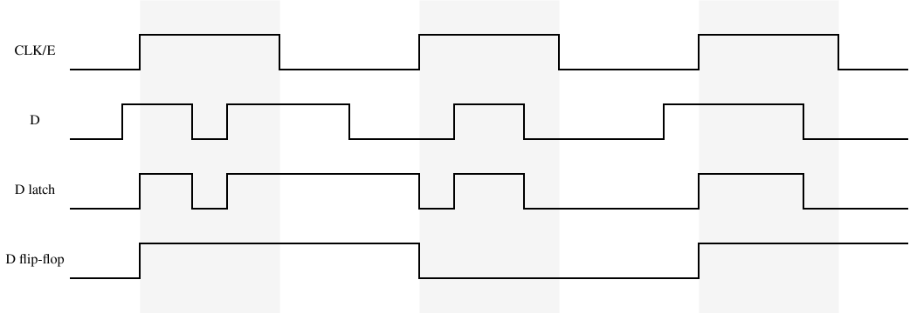

Understanding latches and flip-flops
Table of Contents
1. Introduction
This article covers latches and flip-flops, two kinds of bistable circuits used in electronics.
Bistable circuits are those which can remain indefinitely stable in one of two possible states. This can be extremely useful, as it allows the circuit to store or “remember” a bit of memory (i.e., a digital signal which is high or low, 1 or 0). This is usually accomplished through feedback; some outputs are fed back into the circuit, self-reinforcing the current state indefinitely.
Note that all diagrams are interactive, and are rendered and simulated in the browser through a custom JavaScript library; the inputs can be toggled, and the state of the circuit will change accordingly.
2. Latches
A latch is a bistable circuit that is level-sensitive, meaning that a signal must remain high for the “stored bit” of the circuit to change. Below are some of the most popular latch circuits, from simplest to most complex.
2.1. SR Latch
The SR latch is the most basic form of latch, and it is used to build the rest of the latches and flip-flops in this article.
It has two inputs, S and R, which stand for “Set” and “Reset”. When both inputs are low, the circuit outputs its stored value through Q. When input S becomes high, the circuit stores a high signal; similarly, when input R becomes high, the circuit stores a low signal. The ~Q output stores the inverted value of Q. Both inputs are not supposed to be high; that is considered an invalid input, since both Q and ~Q would become low.
The circuit is composed of two NOR gates, and the output of each one is fed back into the other. This is what causes the stabilization, if both inputs are low, when one of the NOR gates outputs a low signal, it is fed into the other gate, producing a high signal which is then fed back into the other, keeping that original signal low indefinitely.
An alternative version of this latch will be shown below. It uses NAND gates instead of NOR gates, which can be desirable in some scenarios. It uses the same feedback principle, but the circuit reacts to low inputs instead of high ones; both S and R are high by default, and a low signal is used to set or reset the stored value.
2.2. Gated SR Latch
The gated SR latch is simply a regular SR latch with an extra input E, which controls, through two new AND gates, whether inputs S and R are enabled or disabled. If the E signal is low, the SR latch doesn’t receive any updates from the other inputs, holding its “stored” value.
An alternative version of the gated SR latch can be built with only 4 NAND gates. This is convenient in most applications, since NAND gates are cheaper to fabricate on chips than NOR gates.
In the following diagram, notice how input S is on top, aligned with output Q, and input R is at the bottom, aligned with ~Q. This is because the entire logic of the circuit is “inverted”; the two AND gates from the previous circuit are negated into NAND gates, producing a low signal when both inputs are high. The NOR gates are just replaced to compensate for this change.
2.3. D Latch
The D latch is similar to the gated SR latch, but inputs S and R are replaced with a data input D. Whenever the E signal is high, the D signal will be stored directly as the “stored bit” of the circuit.
This is accomplished by negating the D signal and using it as the old “reset” input, while simultaneously keeping D as the old “set” signal. Therefore, if D is high, then the old S remains high but the old R is negated to low, and vice versa.
3. Flip-flops
A flip-flop is a bistable circuit that is edge-sensitive, meaning that the “stored bit” of the circuit is updated whenever a clock signal changes from low to high. Unlike latches, the data signal is not read during a period of time (i.e., when the enable signal is high), but at the exact moment when the clock signal becomes high; if the data signal changes with the clock already high, those changes are ignored.
This section only covers one of the most popular flip-flop circuits, the D flip-flop. Note that there are other useful flip-flop circuits like the JK flip-flop.
3.1. D Flip-Flop
The D flip-flop is built with two D latches connected in series, one acting as “master” and one acting as “slave”. They are both connected to the same clock signal, but the master latch receives it inverted.
This design allows the D flip-flop to only update the stored value at the exact moment when the CLK signal changes from low to high. The overall behavior of the circuit is:
- Clock is low. Master stores values of D, but slave holds.
- Clock becomes high. Master holds, and slave starts storing value from master, which won’t change while the clock is high.
- Clock becomes low. Master stores values of D, but slave starts holding the value it received while the clock was high.
This results in the desired edge-sensitive behavior.
4. Comparison
As mentioned above, latches are level-sensitive while flip-flops are edge-triggered. This difference is easier to understand with a timing diagram which shows how the signals update over time. The following figure compares the behaviors of a D latch and a D flip-flop under the same inputs. Gray areas are used to highlight the intervals when the clock or enable signal is high.

Notice how the D flip-flop only updates its value at the exact moment when the CLK changes from low to high, and how the D latch updates whenever E is high.